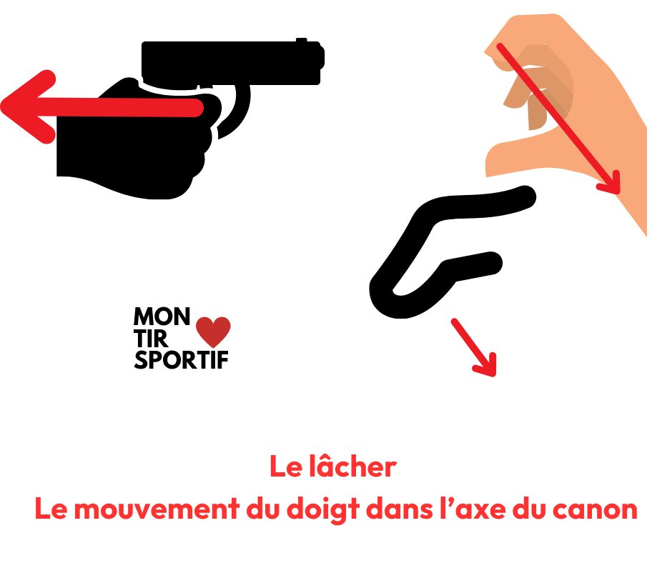
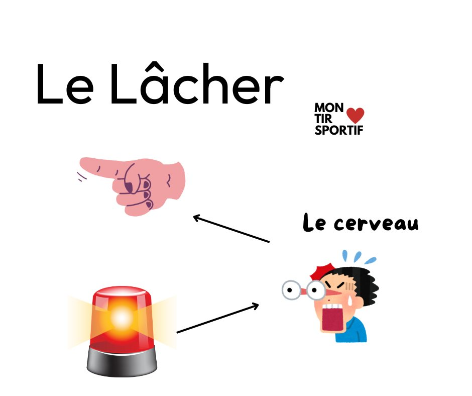
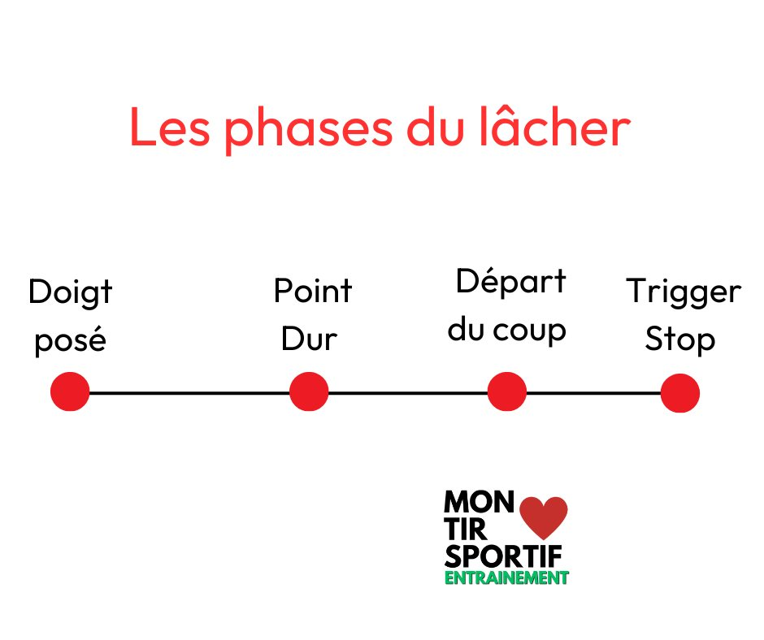
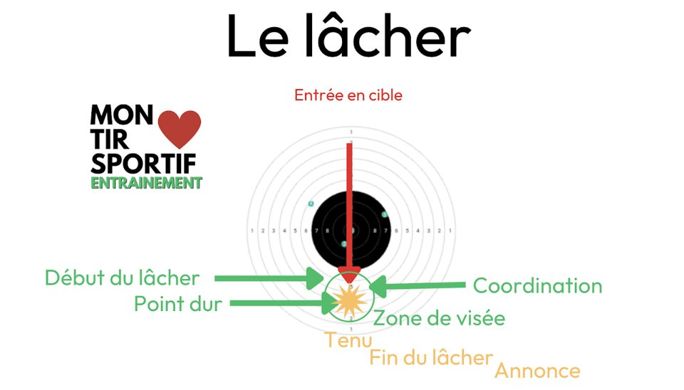
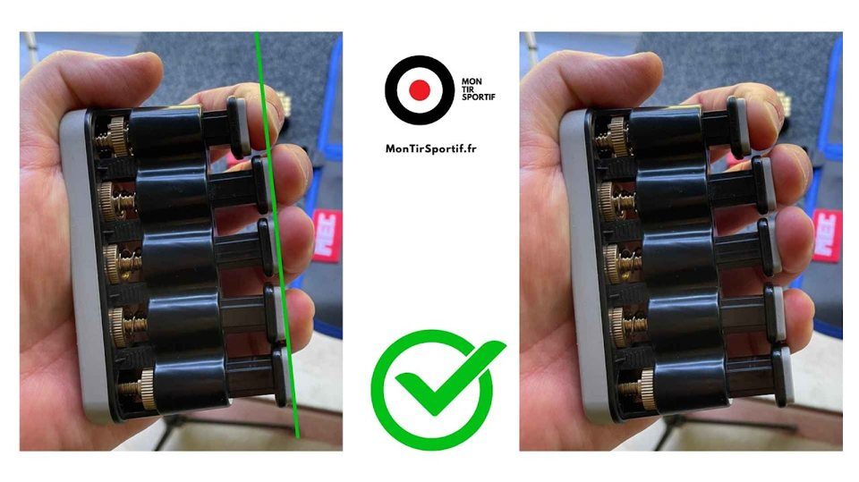
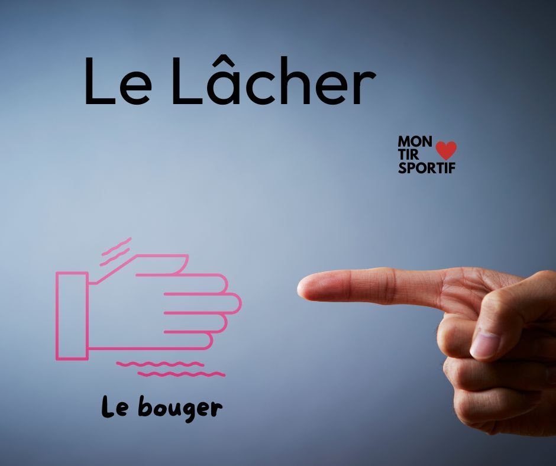

1Approfondir la technique
La position, la visée, le lâcher et la tenue en détail : pour aller plus loin une fois les fondamentaux en place. Les bases sont sur la page Préparation technique.
La position à la loupe
Construire sa position est souvent l'étape la plus longue du tir. Toute variante doit respecter trois critères : produire de la stabilité, être reproductible et préserver le corps du tireur. Les exemples ci-dessous concernent un tireur droitier.
Profil
Épaules, bassin et pieds alignés sur un même plan, dans l'axe de tir. Convient aux tireurs souples, à l'aise avec une rotation importante de la tête.
7/8e
Le corps s'ouvre légèrement vers la cible. C'est la position la plus répandue : plus confortable pour le cou et les épaules.
3/4
Plus ouverte encore. Adaptée quand la souplesse ou la corpulence limitent l'amplitude des gestes : imposer le profil créerait tensions et douleurs.
Trouver sa position naturelle
Les défauts de posture fréquents
| Défaut | Ce qui se passe | Correction |
|---|---|---|
| La vrille | Les épaules ne sont pas sur le même plan que le bassin et les pieds. | Orienter les pieds, puis faire pivoter la ligne d'épaules pour revenir en cible. |
| Pieds trop écartés | Le tireur penche et se cambre pour compenser le poids de l'arme : appuis déséquilibrés, tensions dans les genoux, les chevilles et le bas du dos. | Revenir à un écart proche de la largeur des épaules, poids réparti sur toute la voûte plantaire. |
| Bassin non verrouillé | Le poids de l'arme entraîne le corps vers l'avant : épaule libre haute et contractée, posture instable. | Verrouiller le bassin (genoux légèrement en arrière, fessiers serrés) et chercher le tassement en restant droit. |
→ Chausser sa crosse et doser le serrage
Fiche Bensport : La position du pistolier à la loupe ↗ · La technique de base du pistolet 10 m ↗
Erreur parallèle, erreur angulaire
La ligne de mire (du cran de mire au guidon) donne l'orientation exacte du canon. C'est pourquoi l'œil fait la mise au point sur elle, comme on regarde le niveau à bulle et pas l'étagère quand on bricole.
- Erreur parallèle : la ligne de mire est bien alignée mais décalée par rapport au visuel. Elle coûte peu : 1 mm de décalage donne environ 1 mm en cible.
- Erreur angulaire : le guidon n'est pas bien placé dans le cran de mire. Elle coûte cher : 1 mm d'écart entre cran et guidon donne environ 3 cm en cible à 10 m.
- Conséquence : un bon alignement compte bien plus que la position exacte sur la cible. Une bonne vue de près est plus utile qu'une bonne vue de loin.
Les « lumières »
Ce sont les deux espaces clairs de part et d'autre du guidon. Un guidon plus fin n'est pas plus précis : il devient plus difficile à distinguer. Testez plusieurs largeurs de guidon et de cran de mire.
Visez avec une marge de blanc confortable sous le visuel : la ligne de mire reste facile à lire et l'attention reste dessus.
Le cache-œil (30 mm de large au maximum) détend les muscles du visage ; certaines lunettes de tir ont un iris réglable qui affine la vision de la ligne de mire.
Fiche Bensport : Le guide du pistolier ↗ · La technique de base du pistolet 10 m ↗
La visée en détail
Viser, c'est aligner ses appareils de visée face à la cible : le guidon et le cran de mire, face au centre de la cible.
Une droite imaginaire qui part de l'œil, passe par les organes de visée et arrive sur la cible, dans la zone de visée.
La ligne imaginaire qui passe par le cran de mire et le guidon : c'est elle qui donne l'orientation du canon.
La visée : la position du guidon dans le cran de mire
L'entrée en cible
Ce que c'est
- Le geste qui amène la ligne de mire dans la zone de visée.
- En précision, on entre en général par le haut de la cible.
- En vitesse (standard, 3×7, vitesse olympique), on entre par le bas : c'est l'« attaque par le bas » (voir le geste d'attaque).
- Aucune règle ISSF n'impose une façon d'entrer en cible, tant que la sécurité est respectée. Ce qui compte, c'est la régularité, surtout sur un match de 60 coups.
Comment faire
- Partir toujours du même point A pour arriver toujours au même point B, la zone de visée.
- La descente verticale du bras est le geste classique, mais elle n'est pas obligatoire : une entrée oblique, voire par le bas, est possible si le passage dans le visuel gêne.
- Prendre un repère au-dessus de la cible (une marque au mur, un impact…), en essayer plusieurs et garder celui qui amène régulièrement dans la zone de visée.
- Le guidon peut dépasser un peu du cran au moment du repère : il se réaligne pendant la descente.
- Avec l'expérience et au fil de la saison, on passe des repères visuels à des repères kinesthésiques (les sensations du corps).
Entrée en cible depuis un repère au-dessus de la cible
Le regard est-il sur le guidon ?
Le guidon est net, la cible est floue.
Le guidon est flou, la cible est nette : reposez l'arme, puis reprenez votre séquence de tir.
Le regard
La marge de blanc
- C'est l'écart entre le bas du visuel et le haut du guidon.
- Pourquoi ne pas viser le centre ? Les organes de visée, noirs, se confondraient avec le visuel noir. On règle donc l'arme pour toucher plus haut que le point visé : la visée se détache sur le blanc, sous le visuel.
- La marge sert de référence autour de laquelle on fait de petites oscillations. Elles diminuent avec l'entraînement et changent peu le score.
- Une marge petite (6 ou 5) convient quand la stabilité est bonne. Choisir sa marge est important : testez-la (voir l'exercice la marge de blanc).
Le bouger : on peut faire un 8… ou un 9
Le bougé est naturel, variable et souvent plus fort en match. Mieux vaut l'accepter et apprendre à tirer dans le bougé que lutter contre. Même un bougé important reste dans la zone du 8 : c'est assez pour un bon tir, à condition d'avoir un bon lâcher.
Pour aller plus loin (en anglais)
Pistol Focus (Heinz Reinkemeier)
Aiming with the Pistol (Heinz Reinkemeier)
Les différents types de lâcher
Un bon lâcher surprend le tireur sans perturber la ligne de mire. La position de la ligne de mire sur la cible au moment du départ n'est pas le premier critère : c'est la stabilité de l'arme qui compte.
Pression continue
La détente est pressée très progressivement. Adapté aux longues phases de stabilité.
Lâcher en préparation
La pression commence avant la stabilité complète et se termine à la surprise du départ. Il réduit le temps de visée : utile quand la lumière est forte ou changeante.
Palier de pression
La pression monte par paliers, avec de courtes pauses, à mesure que l'arme approche de la zone de visée. Le tireur ne sait pas exactement quand le coup partira.
Comprendre sa détente
- Détente à précourse : une première course réglable, puis un point de résistance qui correspond au poids de départ. Le poids total = précourse + accrochage.
- Détente « filante » : pas de point de transition net, la surprise du départ est presque systématique. Excellente pour perfectionner son lâcher.
- Détente directe : sans précourse, on estime le poids restant à vaincre (revolvers, pistolets 50 m).
À retenir
- Le lâcher s'apprend d'abord consciemment, puis s'automatise par des exercices répétés (le tir à sec en tête).
- Le coup de doigt naît d'une pensée du type « maintenant ! ».
- Le départ ne se produit pas forcément quand la ligne de mire est dans la zone, mais quand elle s'en approche.
- La qualité du lâcher reflète la confiance du tireur.
Fiche Bensport : Les différents types de lâcher ↗ · Le guide du pistolier ↗
Le lâcher en détail
Le lâcher est un mouvement fait au moment où l'on cherche l'immobilité. En bougeant, le doigt peut faire bouger l'arme et l'écarter du centre : il doit donc agir très, très lentement.

Le lâcher : définition
Tout sur le lâcher : le rôle de la détente et du doigt
Trois acteurs : le doigt, la main, le cerveau
Il bouge : presse-t-il bien dans l'axe du canon ? Sinon, il déplace l'axe du canon et le point d'impact.
Ce sont les muscles de l'avant-bras qui font bouger les doigts. Si d'autres muscles que ceux de l'index travaillent, la pression sur la crosse change, et l'impact avec.
Il ne fait bien qu'une chose à la fois. S'il surveille le doigt, il surveille moins la visée. Et s'il voit trop de mouvement, il intervient : il accélère le doigt pour « profiter » d'une belle image (coup de doigt), ou il le bloque (doigt de bois).


Les trois phases du lâcher
Le doigt est posé sur la queue de détente, sans pression, au centre, avec la pulpe de la dernière phalange.
La pression monte jusqu'au point dur (le pré-départ est rattrapé), toujours dans l'axe du canon.
La pression continue jusqu'au départ du coup… et se poursuit après, jusqu'à la butée de détente.


📄 Les phases du lâcher, version à imprimer (PDF)
Automatiser et coordonner
- Le lâcher est d'abord conscient, puis il devient automatique.
- On n'attend pas une bonne stabilité ou une belle visée pour le commencer : il se déroule tout seul pendant qu'on travaille la visée et la tenue.
- On ne réagit ni à l'image ni au mouvement : c'est ce qui provoque le coup de doigt.
- La sensibilité vient du contact de la pulpe de la dernière phalange ; le mouvement suit l'axe du canon.
Les critères de réussite
- L'arme n'est pas déstabilisée au départ du coup.
- Le guidon et le cran de mire ne bougent pas au départ.
- Le canon pointe vers le centre de la cible : il faut pour cela coordonner lâcher et visée.
- À l'air comprimé, l'apprentissage est plus facile à sec.
Le bon lâcher : pas de réaction de l'arme
Le lâcher en pratique
Le lâcher en pratique (2)
Le lâcher sur carton blanc
L'indépendance des doigts


- Quand l'index bouge vite, le majeur et les autres doigts ont tendance à suivre : c'est naturel, la main serre « en bloc ».
- Le majeur qui bouge change la pression sur la crosse, et provoque un coup de doigt.
- La solution : bouger l'index lentement et travailler l'indépendance des doigts, comme les guitaristes, pianistes ou accordéonistes.
- C'est d'autant plus utile que la détente est lourde : 500 g au pistolet 10 m, 1 kg au 22 LR à 25 m.
- Un petit appareil d'entraînement de guitariste permet de visualiser les variations de pression du majeur. Ne vous en servez pas pour vous muscler : les tendons n'aiment pas ça.
- Avec de l'entraînement, cette dépendance des doigts se corrige.
Un exercice de guitariste ↗ · L'indépendance des doigts à l'accordéon ↗
Nous n'avons pas de muscles dans les doigts ! (Scilabus)
Les trois défauts à connaître
Un lâcher qui déstabilise l'arme, le plus souvent par une action consciente sur la détente : l'arme ne pointe plus le centre (erreur angulaire). Wikipédia ↗
Voyant les organes de visée bien placés, le tireur accélère volontairement son lâcher : il réagit à ce qu'il voit au lieu de laisser le lâcher automatique se dérouler.
Le doigt s'arrête : le cerveau le bloque, par peur de mal faire ou par recherche excessive de la stabilité idéale. Une prise trop serrée peut aussi le bloquer. Remèdes : du tir à sec pour retrouver confiance, des exercices de lâcher par paliers, et ramener l'attention sur le début du lâcher.
Le lâcher dans le bouger
Comment obtenir un lâcher propre alors que l'arme bouge ? En lâchant dans le bouger, sans attendre l'immobilité parfaite.

Le lâcher dans le bouger (MonTirSportif)
Le lâcher au pistolet 10 m (Asian Shooting Confederation, en anglais)
Les vertus de la tenue et de l'annonce
La tenue
À l'air comprimé, le plomb sort à environ 150 m/s : il reste un court instant dans le canon après le départ. Relâcher sa prise, sa visée ou son doigt trop tôt peut encore dévier la trajectoire. La tenue consiste donc à maintenir la posture, la visée et le doigt sur la détente après le départ. Elle témoigne aussi de la qualité du lâcher.
L'annonce
Pendant la tenue, on compare l'image mémorisée au départ du coup avec l'image idéale du 10, et l'on dit où sera l'impact (valeur et position horaire). Avec de l'entraînement, on le situe à environ un centimètre près à 10 m.
- On comprend ses erreurs sans dépendre de la cible.
- On vérifie son réglage : un 10 annoncé qui sort régulièrement à 3 h signifie que l'arme tire à droite.
- On se détache du résultat pour se concentrer sur ses sensations.
Avant de reposer le bras
Après l'annonce, recentrez votre visée sur l'image idéale : vous renforcez le bon réflexe. Trois questions guident l'analyse :
- Ai-je été surpris par le départ ?
- Ma visée était-elle correcte ?
- Où ai-je vu l'impact, et dois-je ajuster ?
Fiche Bensport : Les vertus de la tenue et de l'annonce ↗
Une séquence de tir complète en 20 étapes
Exemple de séquence au pistolet 10 m pour un tireur droitier. Chacun l'adapte à sa morphologie et à ses sensations, puis la répète à l'identique.
Afficher les 20 étapes
- Prendre le canon de la main gauche et chausser fermement la crosse de la main droite.
- Placer la main gauche dans la ceinture ou la poche, bras gauche relâché.
- Se placer face à la ligne de tir, dans l'axe de la cible.
- Pieds à peu près parallèles, écartés comme les épaules.
- Vérifier en regardant ses pieds.
- Genoux légèrement en arrière, fessiers serrés : le bassin est verrouillé.
- Rechercher le tassement en restant droit.
- Vérifier le relâchement du bras gauche.
- Armer le bras : la pente du canon suit celle du bras, le regard est sur la cible.
- En regardant la cible, inspirer pour monter l'arme à hauteur d'épaule.
- Bloquer l'inspiration, marquer un temps d'arrêt, puis expirer lentement : l'arme descend dans l'axe vertical de la cible.
- Si l'arme descend bien dans l'axe, inspirer légèrement pour remonter sur le visuel, puis bloquer.
- Effacer la précourse de la détente et monter en pression jusqu'au point de transition.
- Vider lentement les poumons : les épaules et l'arme descendent.
- Arriver dans la zone de mouvement acceptable et augmenter progressivement la pression à mesure qu'on s'en approche.
- Le coup part dans la zone : légère surprise.
- Faire la tenue : garder la pression de l'index et la visée.
- Pendant la tenue, annoncer son impact.
- Reposer le bras en expirant.
- Terminer l'analyse du coup.
Fiche Bensport : La technique de base du pistolet 10 m ↗ · Le guide du pistolier ↗
MonTirSportif – https://pistol.montirsportif.com/preparation-technique-approfondir.html